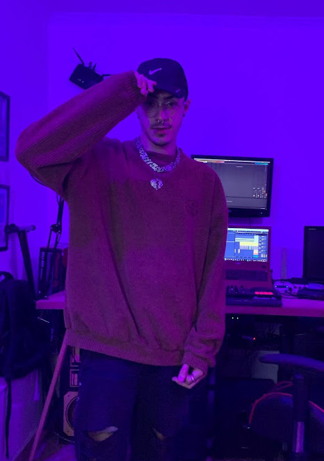

Conheça o Phaix, o cantor trapper do Primo Ferreira
• Marina Croce - 3•D
João Pedro, aluno do terceiro ano, morador de Santos(Baixada Santista), escolheu o nome Phaixx como seu nome artístico.
Jp Contou que a sua primeira inspiração para a música foi o seu pai, e inspirações artísticas foram citados os nomes Matuê, Lil Peep, Travis Scootm e a banda Nirvana (por mais que não faça parte do gênero musical que JP canta, ele falou que a banda é uma grande inspiração). A grande motivação para criar música foi poder se expressar melhor
Phaixx falou que para ele, o melhor jeito de desabar é escrever uma música, que ele se sente bem após produzir uma.
O seu maior ídolo é o cantor Lil Peep (cantor que faleceu em 2017).
A Maior mensagem nas músicas do Phaixx é que felizmente, ou infelizmente tudo é passageiro, que pode estar acontecendo alguma coisa ruim, vai passar, incluindo coisas pessoais e coisas fúteis, pessoas, momentos, tudo é passageiro, para não desistirmos do futuro. Ele também citou que fala em suas músicas sobre coisas que quer no futuro:
"Eu falo muito de joias, carros, dinheiro, mulheres, essas coisas assim, um rap mais ostentação"A música sempre está em todo lugar, independente se está só na nossa cabeça. A musica é tudo
"Foi um refúgio que eu tive... E as vezes, sabe quando tipo, cê tá cansado da realidade? Você quer dar uma fugida? Eu uso a música como um refúgio de mim mesmo".